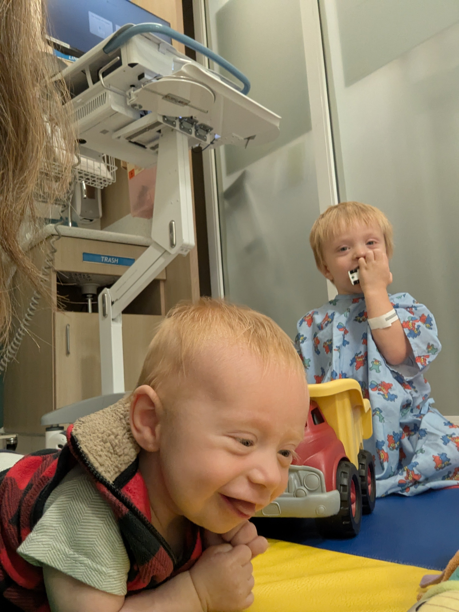
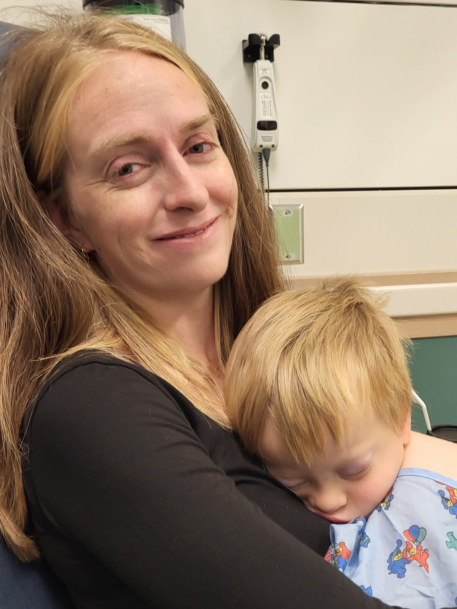

On Our Way
September 23, 2026
I sat in the cafeteria, holding back tears. The past few months were exhausting. In my mind, today was the end of the calendar. We would find out more about Micaiah's eyes today. While they examine his eyes, we sit for lunch and wait. Our strategy through the past several months of refusing to let fears of possible catastrophic outcomes steal our joy in the moment has been so helpful. It has allowed us to enjoy our time with the boys—to be present and attentive parents. But the fear came crashing down on me today.
Grief is a morbidly funny thing. Three years of seminary taught me how to listen to people discussing their feelings, reflecting on them in a way that illuminates what is helpful and what is not. I learned how to identify core needs and helped people process questions about God's goodness. The one thing I felt unequipped to handle was the oppressive weight of the stakes of today. I guess that's where courage comes in. It's a developed skill more than an inherent quality. The only thing I could do in response was pray, "I believe; help my unbelief."
It was a bit more of a struggle to get Micaiah under anesthesia this time. He was scared when we put a gown on him, scared when I put a gown on myself to take him to the operating room, and scared when we started to untie his gown. Thankfully, Hot Wheels are therapeutic. His death grip on those seems to be what got him through it.

Even Hot Wheels sound tasty when you've been fasting
As we waited in the cafeteria, Jerusha caught me getting misty-eyed. I think I'm allowed to do that under the circumstances, so I'll hold on to my man card for now. As we were laughing about it, a text alert came in, saying they were done with the procedure. It seemed faster than last time. What did that mean? Did they treat the right eye, then look at the left eye and decide not to perform any therapy because it was beyond saving? Why was it so fast? The fears swirled in my mind as we packed ourselves up to meet with the doctor.
As it turns out, time seems to go faster when your toddler is at a friend's house rather than in a waiting room with nothing to do. They had examined his eyes and performed laser therapy and cryotherapy on both eyes. When we asked for a status update, the doctor said that the right eye still has a greater than 90% chance of being saved. The left eye, about which he said last time, "It would be miraculous if we could save it," now has a greater than 50% chance of being saved—possibly even 60-70%. The tumors and swelling that had displaced the retina in that eye have improved dramatically. All the tumors have shrunk by another 50%, meaning they have now shrunk 75% from the beginning of treatment.
Micaiah is progressing far beyond the doctor's expectations (he used those exact words), and the left eye's improvement was genuinely shocking to him. Of course, neither eye is safe yet, but one might say we are well on our way to the miraculous. As Jerusha went back to be with Micaiah when he woke up, I sat in the waiting room with Samuel. Instead of getting misty-eyed out of fear, I had a good snotty-cry session. It wasn't quite to the level of an ugly cry, but I do hereby surrender my man card. Must have been the super spicy food hospital cafeterias are known for.
As of now, they are recommending one more round of intravenous chemotherapy, then shifting to intra-arterial and intravitreal chemotherapy. Intra-arterial therapy will involve using a catheter from his leg to travel all the way up to the ocular artery to give higher doses of chemo more locally. The intravitreal therapy involves putting a dosage of chemo directly into the eyes to address any retinoblastoma cells remaining in there.
After today's treatment, Micaiah was very sleepy and his eyes swollen from the cryotherapy. In addition to all the amazing prayers you are offering for Micaiah, please pray that he would recover well over the next few days. Please also join us in giving thanks to God for the work He has done in Micaiah's eyes. We still have a long way to go, but the road is paved with God's palpable mercies.

Waking up is hard